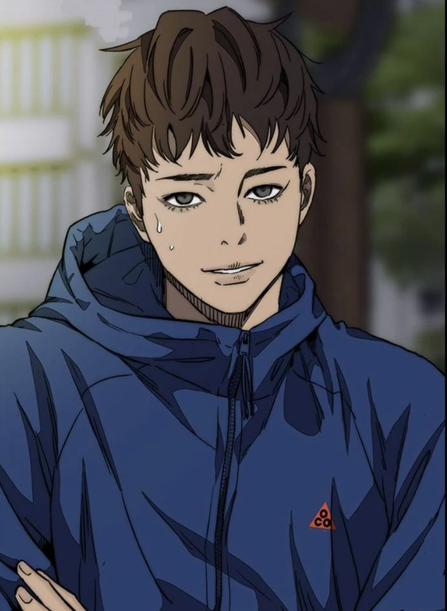

Wind Breaker" es un manhwa que sigue la historia de Jo Ja-Hyun, también conocido como Jay, quien es el presidente estudiantil de Taeyang High. Jay no solo es un estudiante inteligente, sino también un ciclista extremo con habilidades destacadas. A medida que sigue su pasión por el ciclismo, Jay se encuentra con amigos, amor y grandes aventuras. El manhwa combina acción, drama y romance, y ha ganado popularidad por su trama emocionante y personajes interesantes. El instituto Frin, donde se desarrolla la historia, tiene la reputación de tener la media más baja y los alumnos más rebeldes. Jay se une a una pandilla llamada Wind Breaker, cuyo objetivo es proteger la ciudad de otras bandas y maleantes. Para ser aceptado en la pandilla, Jay debe ganarse el respeto a través de su habilidad para pelear
Personajes mas importantes
Minu es un miembro de la pandilla Wind Breaker en el instituto Frin. Es conocido por ser un ciclista talentoso y valiente. A pesar de su apariencia tranquila y reservada, Minu demuestra ser un adversario formidable en las competiciones de ciclismo. Es un personaje carismático y leal, siempre dispuesto a ayudar a sus compañeros de pandilla ya enfrentar cualquier desafío que se les presente. A lo largo de la historia, Minu se convierte en un amigo cercano de Jay, el protagonista principal, y juntos forman un equipo fuerte y unido. Minu destaca por su habilidad para tomar decisiones rápidas y estratégicas durante las carreras, lo que lo convierte en un valioso miembro de la pandilla. Aunque su pasado y detalles personales no se exploran en profundidad en el manhwa, Minu se destaca por su dedicación al ciclismo y su lealtad hacia sus amigos. Su presencia en "Wind Breaker" agrega emoción y dinamismo a la historia.
June Lee es una estudiante de secundaria en el instituto Frin y miembro de la pandilla Wind Breaker. Es conocido por su habilidad excepcional en el ciclismo de montaña y su actitud desafiante. June es un personaje enigmático y misterioso, con una personalidad introvertida y reservada. A pesar de su apariencia tranquila, June Lee es un ciclista extremadamente talentoso y valiente. Es reconocido por su estilo de conducción agresiva y su capacidad para superar obstáculos difíciles en el camino. Su destreza en las competiciones de ciclismo le ha valido el respeto de sus compañeros de pandilla y de otros ciclistas. June Lee se convierte en un amigo cercano de Jay, el protagonista principal, y juntos forman un equipo sólido dentro de la pandilla Wind Breaker. Aunque June no se destaca por ser una persona muy sociable, muestra un fuerte sentido de lealtad hacia sus compañeros y está dispuesta a protegerlos en todo momento. Aunque no se revela mucho sobre el pasado y los detalles personales de June Lee en el manhwa, su presencia en "Wind Breaker" agrega intriga y emoción a la historia. Su habilidad para enfrentar desafíos y superar obstáculos lo convierte en un personaje interesante y valioso en el mundo del ciclismo de montaña.
Shelly es una estudiante de secundaria en el instituto Frin y es la única chica miembro de la pandilla Wind Breaker. Es conocida por su destreza en el ciclismo de montaña y por su personalidad enérgica y valiente. Shelly es una joven carismática y decidida, siempre dispuesta a enfrentar desafíos y superarlos. Aunque inicialmente puede parecer un poco impulsiva, Shelly demuestra ser una ciclista talentosa y astuta. Su habilidad para tomar decisiones rápidas y su agilidad en el manejo de la bicicleta la convierten en un valioso miembro de la pandilla Wind Breaker. Además, Shelly es una gran motivadora y animadora para sus compañeros de equipo, siempre alentándolos a dar lo mejor de sí mismos. A lo largo de la historia, Shelly se convierte en una amiga cercana de Jay, el protagonista principal, y juntos forman un equipo dinámico y poderoso. A medida que enfrenta desafíos y compite en carreras de ciclismo, Shelly demuestra su determinación y dedicación al deporte. Aunque no se revelan muchos detalles sobre el pasado y la vida personal de Shelly en el manhwa, su presencia en "Wind Breaker" agrega diversidad y energía al grupo de personajes. Su pasión por el ciclismo y su personalidad vibrante la convierten en un personaje memorable y querido por los fanáticos del manhwa.